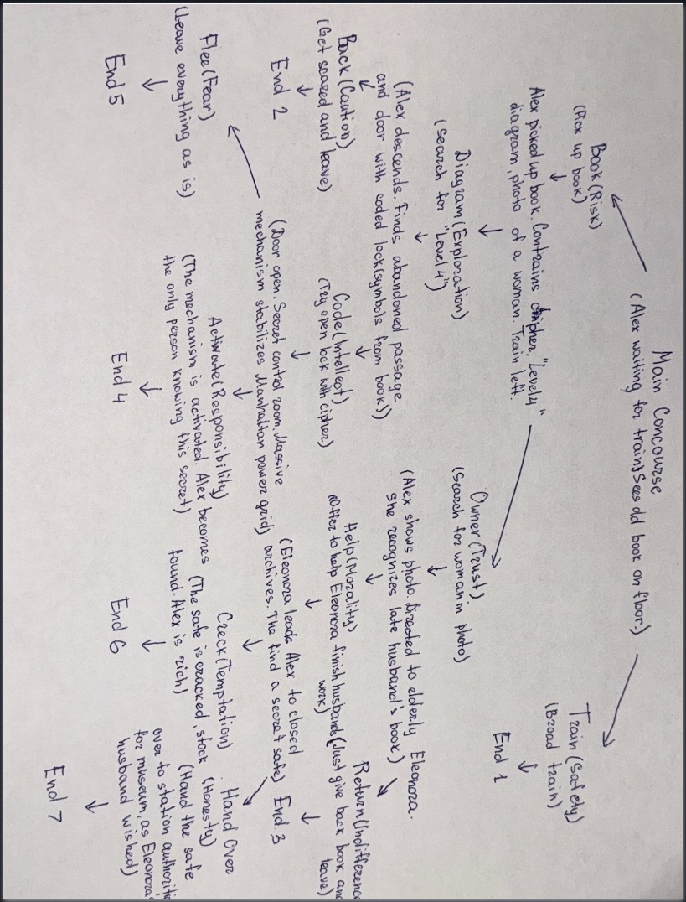

Alex is tired. Another day of routine, waiting for the 6:02 PM train on Track 34. The Grand Central concourse is a vortex of moving people, but today, everything stops. A glint near an information kiosk catches Alex's eye: an aged book.
Inside, Alex finds coded entries, a cryptic diagram of a mysterious "Level 4," and a black-and-white photograph of a woman from the 1940s. A train whistles; the doors are closing.
This is your moment. Guide Alex. Will you trust the book and descend into the station's shadow levels? Will you try to find the woman, trusting Eleonora’s memory? Or will you walk away? Your choices will determine if Alex finds legendary wealth, historical honor, or brings about a city-wide blackout. The map of destiny is now in your hands.
Below is the map of my story showing the branching paths and possible endings.

This image represents one possible setting from my story.